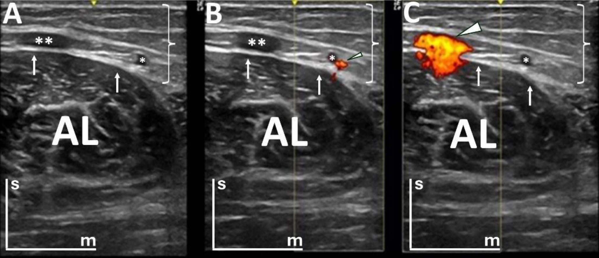

Respuesta clínica corta
¿Existe una ventana segura para pinchar el aductor largo por palpación?
No se identificó una zona universal libre de estructuras vulnerables; el estudio favorece visualizar vasos, fascia y nervio antes de cualquier procedimiento.
Dato clave91,4 % con al menos un vaso · nervio a 3,63–3,93 cm
La unión miotendinosa proximal del aductor largo está cruzada por vasos y próxima a la rama anterior del nervio obturador; la anatomía observada no permite definir una ventana universal segura por palpación.
Observado
Qué encontró y cómo interpretarlo
La combinación de disección y ecografía conecta el riesgo anatómico con una exploración reproducible en personas vivas.
La presencia frecuente de vasos contradice la idea de una zona fija de punción basada solo en referencias superficiales.
El trabajo informa sobre plausibilidad de riesgo, pero no cuantifica complicaciones clínicas ni prueba superioridad de una técnica.
Atlas del artículo
Imágenes para entender el procedimiento
Estas figuras proceden del artículo original y se reproducen con licencia abierta verificada. Se muestran por su utilidad anatómica o técnica, no como prueba aislada de diagnóstico o eficacia.

La figura compara modo B y Doppler sobre el aductor largo proximal y señala vasos que atraviesan la zona.
Cómo leerlaLa imagen procede de personas sanas y no delimita una trayectoria de punción segura por sí sola.
Santamaría-Le Pera J y colaboradores. Figura reproducida bajo licencia CC BY 4.0; consulte el artículo original. · Fuente · Licencia CC BY.
Procedimiento del artículo
Mapa ecográfico de riesgo en el aductor largo proximal
El protocolo transversal combina modo B y Doppler de potencia en la unión miotendinosa proximal para reconocer vena safena, vasos intramusculares, fascia y la rama anterior del nervio obturador.
- Participantes
- 26 personas · 52 muslos
- Vasos
- 91,4 % con al menos uno
- Profundidad nerviosa
- 3,63–3,93 cm
- 01
Plano transversal
Explorar con transductor lineal a 10 MHz desde el sector medial al anterolateral de la unión proximal.
- Referencias
- Aductor largo, fascia lata, fascia propia y vena safena magna.
- Lectura
- La ausencia de vaso en una imagen no equivale a una trayectoria segura.
- 02
Doppler de potencia
Ajustar una caja centrada sobre el músculo y repetir los sectores para detectar vasos superficiales e intramusculares.
- Referencias
- Red vascular y rama anterior del nervio obturador en profundidad.
- Lectura
- Planificar cualquier trayectoria sobre la anatomía individual y mantener visibles las estructuras vulnerables.
Protocolo reconstruido de forma prudente desde el texto completo y sus figuras. Sirve para comprender la adquisición y no sustituye formación, razonamiento clínico ni supervisión.
Aplicabilidad
Qué significa clínicamente
Usar Doppler antes de elegir una trayectoria y conservar la aguja visible si el procedimiento está indicado.
Presentar los datos como mapa de riesgo anatómico, no como autorización para intervenir.
Límite
Qué no permite afirmar
Solo seis piezas cadavéricas y voluntariado sano.
No estudia pacientes con lesión ni cambios posquirúrgicos.
No mide eficacia o seguridad clínica de la guía ecográfica.
Contexto
¿Se parece a tu paciente?
- Población estudiada
- Seis piezas cadavéricas y 26 personas sanas, con 52 muslos examinados mediante ecografía y Doppler de potencia.
- Diseño
- Investigación anatómica cadavérica y ecográfica transversal
- Resultado evaluado
- Distribución vascular y profundidad de estructuras vulnerables
Fuente primaria
Lee el estudio, no solo nuestro análisis
Santamaría-Le Pera J, et al. Are palpation-guided interventional procedures on the adductor longus muscle safe? Surg Radiol Anat. 2025;47:74. doi: 10.1007/s00276-025-03567-2
Responsabilidad editorial
Francisco José Extremera García
Fisioterapeuta colegiado ICPFA 4288 · Osteópata D.O.
Creador y responsable editorial de FisioLógico
- Última revisión
- Conflictos de interés
- Ninguno declarado.